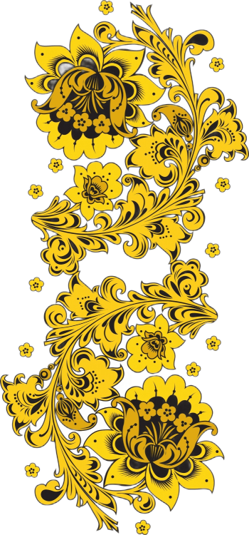
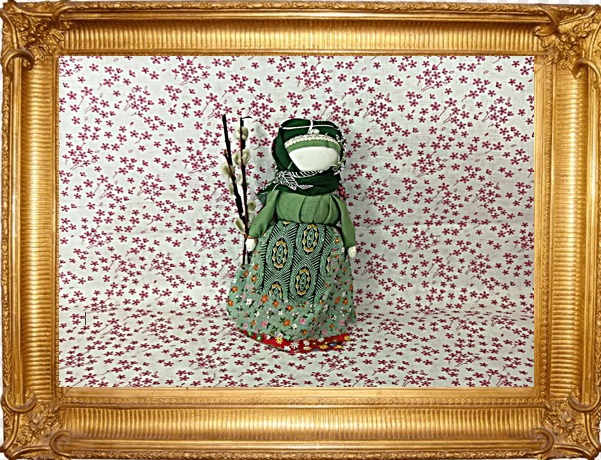
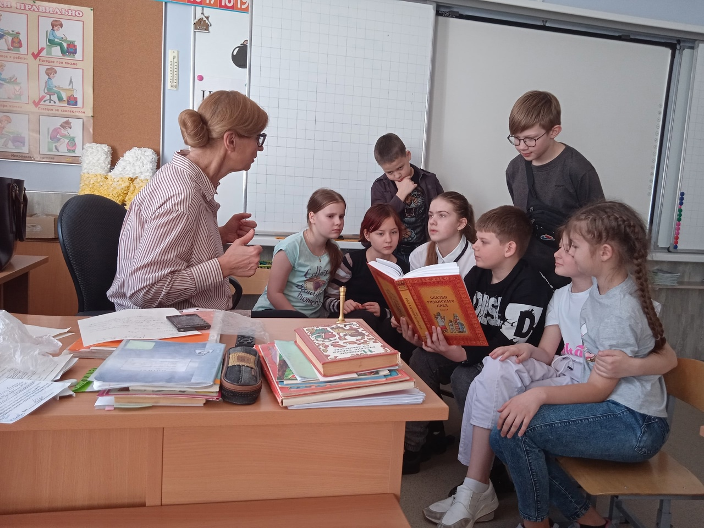

|  |
Если не будет корней в родной стороне – будет много людей, похожих на иссушенное растение перекати – поле.
|
|
Официально Рязани 928 лет, по утверждениям некоторых археологов Рязань может оказаться еще более древним городом чем мы считаем.
Рязань, это наша история, история которую в первую очередь делали люди, которые жили в этой земле.
Добрыня Никитич и Евпатий Коловрат, генерал Скобелев и маршал Бирюзов, братья Пироговы и композитор Александров, ученые Павлов и Циолковский. Как такое могло получиться? Почему рязанская земля так богата на таланты? Мы думаем секрет кроется в крепких семьях и семейных традициях наших земляков. Не случайно рязанка Феврония с мужем своим Петром стали почитаемыми святыми, покровителями семьи.
Традиционная русская семья, это в первую очередь про людей, про их традиции. Эти традиции не должны умирать, они должны жить и помогать нам сегодня.
|
НАША ЦЕЛЬ: создание театрализованной экскурсии "Семья крепка ладом" |
НАШИ ЗАДАЧИ: |
ЗАХОДИТЕ В НАШ МУЗЕЙ: |
|





|
КАК ВСЕ НАЧИНАЛОСЬ
 |
 |